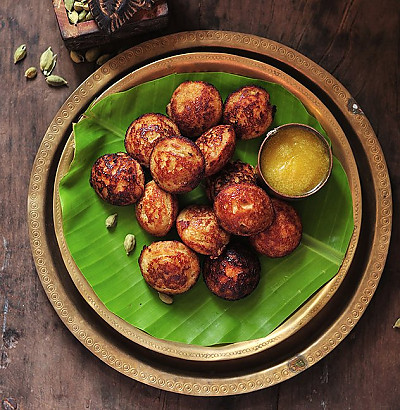

Serving Size:Serves 4-6
Prep Time:
20 min (+4-8 hrs soaking/fermenting)
Cook Time:
40 min
Total Time:
~5-9 hrs
Ingredients:
For Appam:
• 2 cups raw rice
• 1/2 cup fresh grated coconut
• 1/2 tsp active dry yeast
• 1 tsp sugar
• 1/2 cup cooked rice
• 1/2 tsp salt
• Water as needed
For Stew:
• 2 cups mixed vegetables (carrots, potatoes, beans), diced
• 1 cup thick coconut milk
• 1 cup thin coconut milk
• 2 green chilies, slit
• 1 inch ginger, sliced
• 2 onions, sliced
• 1 sprig curry leaves
• 2 cardamom pods
• 2 cloves
• 1 small cinnamon stick
• 2 tbsp coconut oil
• Salt to taste
`,
`
Instructions:
For Appam:
1. Wash and soak raw rice for 4-5 hours.
2. In a blender, add soaked rice, grated coconut, cooked rice, and enough water to make a smooth batter.
3. Dissolve yeast and sugar in 2 tbsp warm water, let sit 10 min until frothy. Add to batter.
4. Mix well, cover, and ferment overnight (6-8 hrs) in a warm place.
5. Add salt, mix gently. Batter should be pourable.
6. Heat an appam pan, pour a ladleful of batter, swirl to coat sides, cover and cook 2-3 min until edges are lacy and center is cooked.
For Stew:
7. Heat coconut oil in a pan. Add cardamom, cloves, cinnamon, and curry leaves. Sauté 30 sec.
8. Add onions, ginger, green chilies. Sauté until onions are soft.
9. Add diced vegetables, salt, and thin coconut milk. Cover and cook until veggies are tender (10-12 min).
10. Add thick coconut milk, simmer gently (do not boil) for 2-3 min.
11. Serve hot with appam.`)">
Appam with Stew